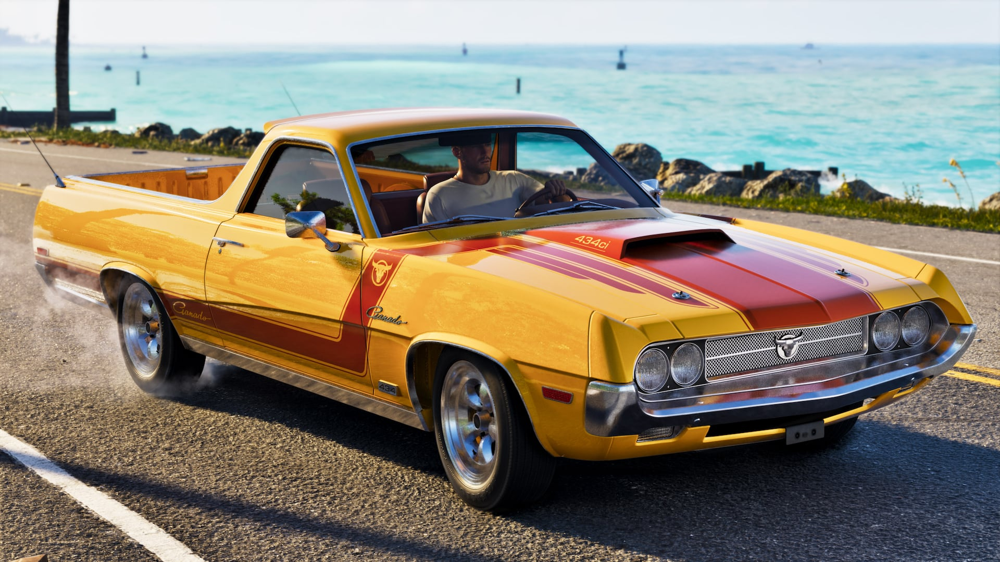

© Rockstar Games / Take-Two Interactive
Ce qu'on sait
Surveiller sa jauge d'essence
EN BREF
- Jauge de carburant visible pendant la conduite
- Ravitaillement en station-service
- Confirmé lors de l'Extended Look du 27 août 2026
C'est une première pour un GTA principal : les véhicules ont une jauge d'essence, et il faut faire le plein en station-service. L'Extended Look l'a présenté comme un mécanisme de jeu à part entière.
Nos conseils
- Avant un braquage, fais le plein : une panne pendant une fuite, c'est l'arrestation assurée.
- Sur les longs trajets (Leonida est environ deux fois plus grande que la carte de GTA V), repère les stations sur ta route.
- Les marques de carburant de Leonida existent déjà : Xero ou Arrow Gasoline, par exemple.
- Un véhicule volé n'a peut-être pas le plein : jette un œil à la jauge avant de partir.
On ignore encore à quelle vitesse l'essence se vide, si les bateaux et avions sont concernés, et si une panne immobilise totalement le véhicule.
Sources : KeenGamer, GamesRadar+